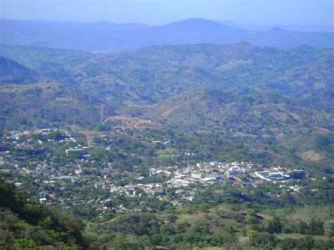

MAPA DE CHALATENANGO
Información
Chalatenango es un departamento ubicado al norte de El Salvador. Es conocido por su clima fresco, montañas y naturaleza. Tiene una extensión de 2,017 km² y una población aproximada de 204,000 habitantes. La cabecera departamental es la ciudad de Chalatenango.
Datos Históricos
Chalatenango fue fundado como departamento en 1855. Ha tenido un papel importante en la historia de El Salvador, especialmente durante el conflicto armado, debido a su ubicación estratégica y su geografía montañosa.

Lista de Municipios
- Agua Caliente
- Arcatao
- Azacualpa
- Cancasque
- Chalatenango
- Comalapa
- Concepción Quezaltepeque
- El Carrizal
- El Paraíso
- La Laguna
- La Palma
- La Reina
- Las Vueltas
- Nombre de Jesús
- Nueva Concepción
- Nuevo Edén de San Juan
- Ojos de Agua
- Potonico
- San Antonio de La Cruz
- San Antonio Los Ranchos
- San Fernando
- San Francisco Lempa
- San Francisco Morazán
- San Ignacio
- San Isidro Labrador
- San José Cancasque
- San José Las Flores
- San Luis del Carmen
- San Miguel de Mercedes
- San Rafael
- Santa Rita
- Tejutla
Centros Turísticos
Entre los principales centros turísticos están el municipio de La Palma famoso por su arte, el Cerro El Pital (el punto más alto de El Salvador), y la Ruta de la Paz con sus bellos paisajes.
Centros Turísticos
Agua Fría está ubicado en la zona urbana de la ciudad de Chalatenango, es uno de los lugares turísticos más visitados del departamento. Este centro recreativo es administrado por el ISTU ( Instituto Salvadoreño de Turismo) y cuenta con tres piscinas para que chicos y grandes puedan deleitarse con sus aguas que son tomadas del río Agua Fría Fuente: 10 Turicentros en el departamento de Chalatenango
Centros Turísticos
El Turicentro Vista al Lago se encuentra ubicado en el Caserío Las Cuevitas, a un kilómetro y medio de la Carretera Troncal de Norte, en Chalatenango.
Lagos
Chalatenango cuenta con el Embalse del Cerrón Grande, también conocido como Lago Suchitlán, donde se pueden realizar paseos en lancha y avistamiento de aves.
Ríos
Río Sumpul está ubicado a 18 kilómetros de la cabecera departamental de Chalatenango, en el municipio de San José Las Flores y a orillas del Río Sumpul.Fuente

Volcanes
Chalatenango no posee volcanes activos importantes, pero su terreno es montañoso y cuenta con cerros como El Pital y Miramundo, ideales para el ecoturismo.
Personajes Célebres
Chalatenango es tierra de artistas y luchadores sociales. Es reconocido por sus artesanos de La Palma y por su historia en la defensa de los derechos humanos.